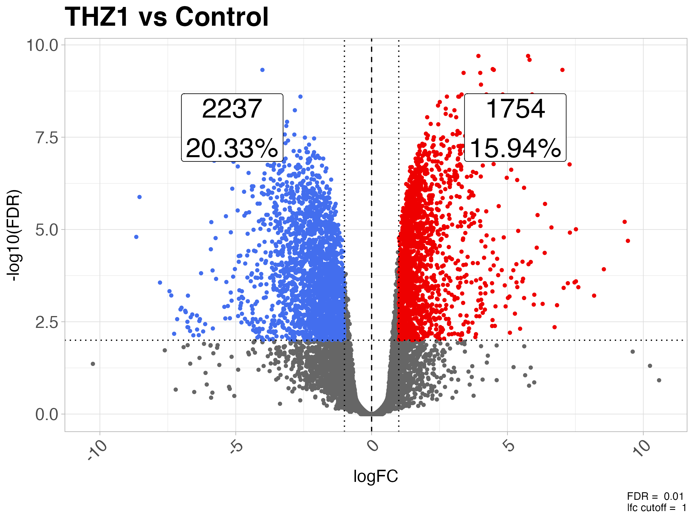
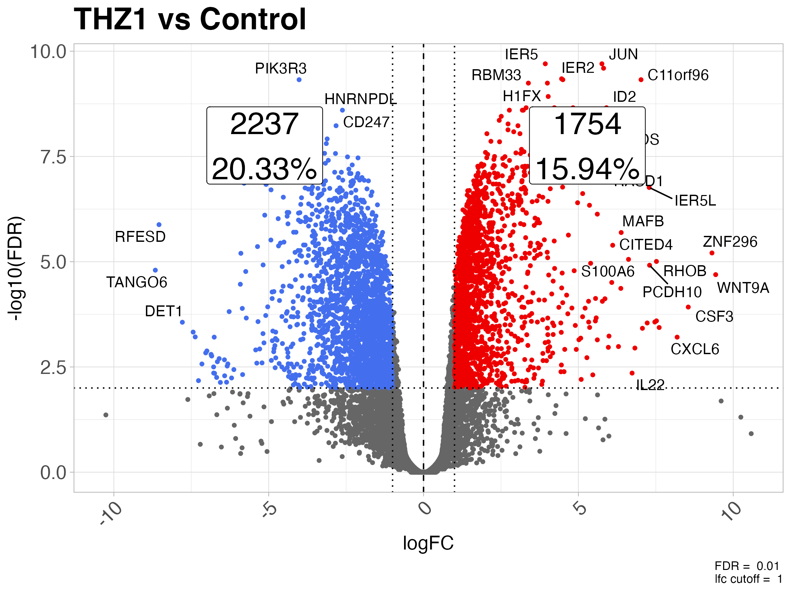
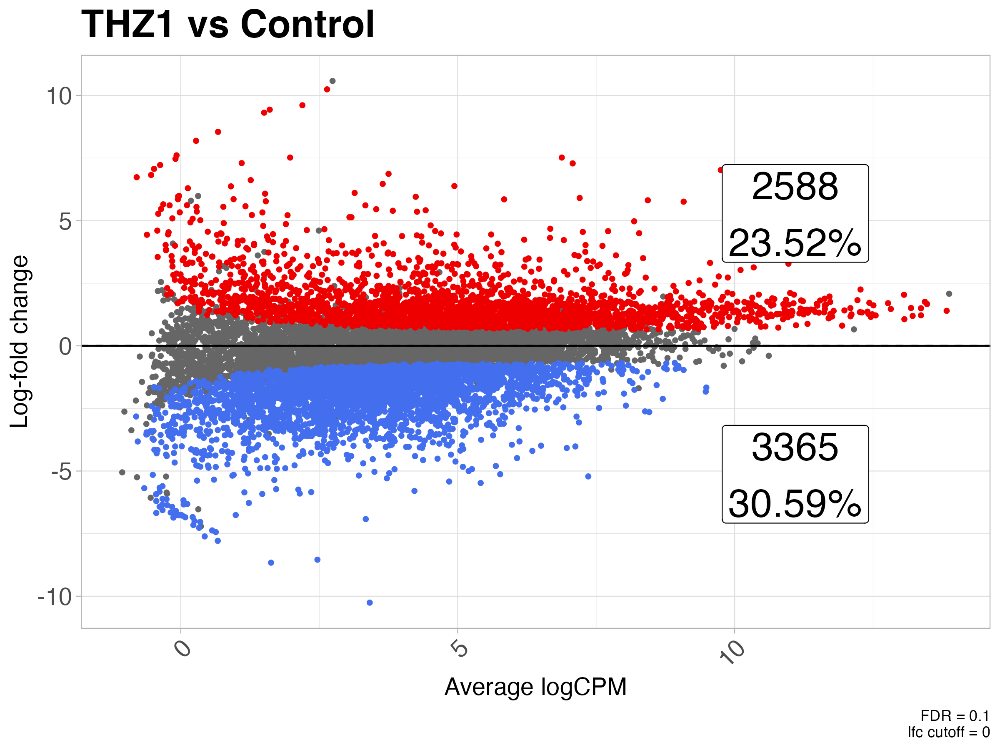
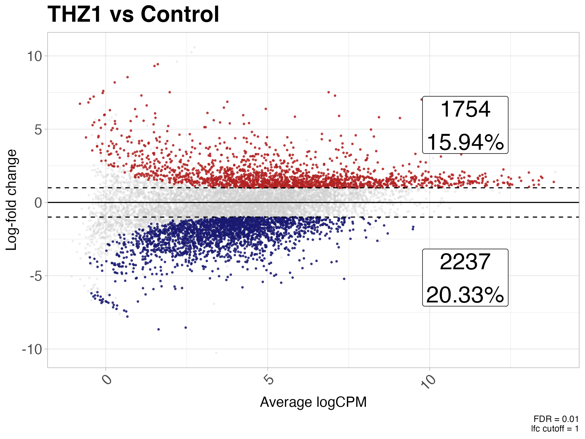
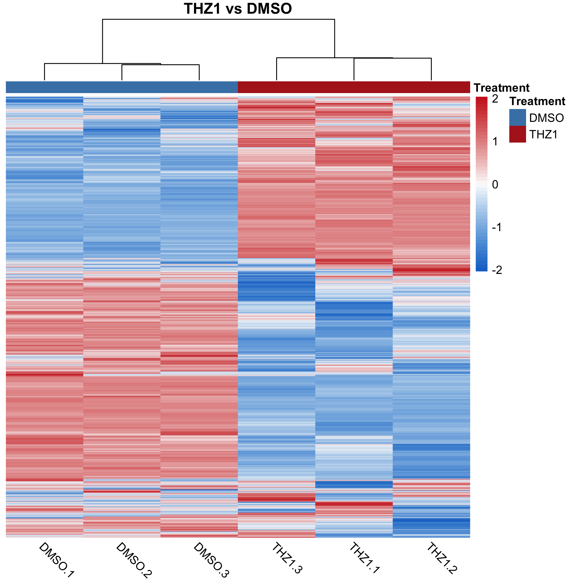
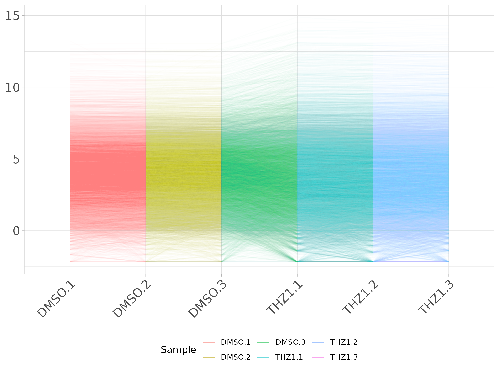
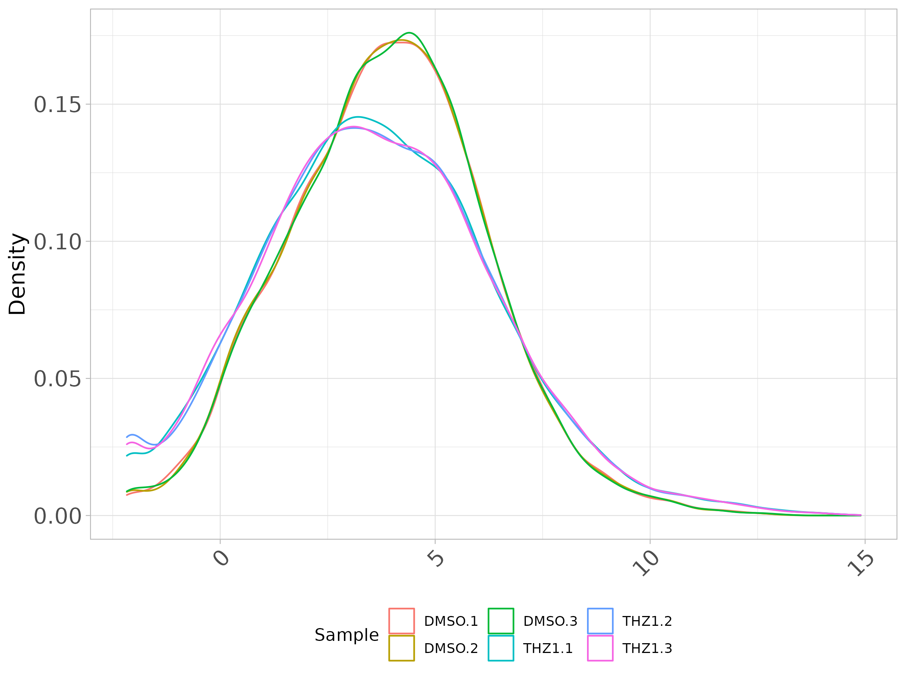

This package contains helper functions for common bioinformatics tasks (and some not-so-common tasks). If you find yourself reusing old code over and over, let me know and we’ll create a function and put it in this package.
I will be adding tests, however, please test functions and let me know when things are broken by either raising an issue on Github or contacting me.
Installation
Since this package will be constantly changing be sure to install the latest version from Github using:
# Make sure you have devtools installed
install.packages("devtools")
# Then install using devtools::install_github
devtools::install_github("coriell-research/coriell")Examples
- Summarize results from differential expression analysis
- Create volcano plot from differential expression results
- Create md plot from differential expression results
- Heatmap with sensible defaults
- Parallel coordinates plot of expression matrix
- Boxplot of expression matrix
- Density plot of expression matrix
- Perform gene ontology analysis with PANTHER
- Correlate methylation data with age
For an overview of how to use some of these functions in a typical analysis check out the RNA-seq vignette (more vignettes to come)
The package also contains many other convenience functions so be sure to check out the reference page as well.
Built-in datasets
These datasets are built into the package for testing purposes and are used below to illustrate some functionality.
-
GSE161650_de: Differential expression results of THZ1 vs DMSO from GSE161650 -
GSE161650_lc: Normalized log2 counts from THZ1 vs DMSO replicates from GSE161650
The head of GSE161650_de looks like:
> feature_id logFC unshrunk.logFC logCPM PValue FDR
> 1 JUN 5.759233 5.759908 9.079350 2.919097e-14 1.990666e-10
> 2 IER5 3.931325 3.931420 10.158336 3.365738e-14 1.990666e-10
> 3 GADD45B 5.813030 5.814071 8.432432 6.435666e-14 2.537583e-10
> 4 IER2 4.457981 4.458016 12.223835 1.528890e-13 4.521309e-10
> 5 PIK3R3 -4.018325 -4.019603 7.124408 2.122484e-13 4.752097e-10
> 6 HEXIM1 4.497345 4.497844 8.275561 2.696985e-13 4.752097e-10And GSE161650_lc:
> DMSO.1 DMSO.2 DMSO.3 THZ1.1 THZ1.2 THZ1.3
> A1BG 5.3323512 5.4576081 5.2876011 6.703752 6.8090471 6.7908595
> AAAS 3.8738768 3.8839857 3.5242625 3.768811 4.1406003 3.7454773
> AACS 2.1381539 2.3748462 2.2761971 3.769163 3.4352003 3.4064114
> AADAT 0.8240013 -0.2391457 -0.8699138 -1.342273 0.1967574 -0.8355924
> AAED1 1.2814586 1.5332476 2.0735095 2.443188 2.1270932 0.9707206
> AAGAB 6.8747238 6.7396922 6.6670762 6.756664 6.5840839 6.7662317See the package documentation ?GSE161650_de and ?GSE161650_lc for citation information.
Summarize results from differential expression test
Return a table of up/down/non-de counts and their percentages.
de <- GSE161650_de
summarize_dge(de, fdr = 0.1)
> Direction N Percent
> 1 Up 2588 23.52
> 2 Down 3365 30.59
> 3 Unperturbed 5049 45.89Create volcano plot from differential expression results
library(ggplot2)
plot_volcano(de) +
ggtitle("THZ1 vs Control") +
theme_coriell()
Different significance levels can be used to filter the plotted points. For example, significance levels can be set by specifying the fdr and lfc values.
plot_volcano(de, fdr = 0.01, lfc = log2(2)) +
ggtitle("THZ1 vs Control") +
theme_coriell()
Labels for the counts will be displayed by default. To remove them set annotate_counts = FALSE
plot_volcano(de, fdr = 0.01, lfc = log2(2), annotate_counts = FALSE) +
ggtitle("THZ1 vs Control") +
theme_coriell()
Text labels can also be added for the DE genes by setting label_sig = TRUE. If label_sig = TRUE then the lab argument must also designate a column containing the names of the items to plot. Additional arguments can be passed to ggrepel::geom_text_repel() via ... if you need to modify the behavior of the labels.
plot_volcano(de, fdr = 0.01, lfc = log2(2), label_sig = TRUE, lab = "feature_id") +
ggtitle("THZ1 vs Control") +
theme_coriell()
All aesthetics of the points can also be changed
plot_volcano(de,
fdr = 0.01,
lfc = log2(2),
up_color = "firebrick",
down_color = "midnightblue",
nonde_color = "grey80",
up_alpha = 0.8,
down_alpha = 0.8,
nonde_alpha = 0.25,
up_size = 0.5,
down_size = 0.5,
nonde_size = 0.5
) +
ggtitle("THZ1 vs Control") +
theme_coriell()
Create md plot from differential expression results
plot_md(de) +
ggtitle("THZ1 vs Control") +
theme_coriell()
Different significance levels can be used to filter the plotted points. For example, significance levels can be set by specifying the fdr and lfc values.
plot_md(de, fdr = 0.01, lfc = log2(2)) +
ggtitle("THZ1 vs Control") +
theme_coriell()Labels for the counts will be displayed by default. To remove them set annotate_counts = FALSE
plot_md(de, fdr = 0.01, lfc = log2(2), annotate_counts = FALSE) +
ggtitle("THZ1 vs Control") +
theme_coriell()
Text labels can also be added for the DE genes by setting label_sig = TRUE. If label_sig = TRUE then the lab argument must also designate a column containing the names of the items to plot. Additional arguments can be passed to ggrepel::geom_text_repel() via ... if you need to modify the behavior of the labels.
plot_md(de, fdr = 0.01, lfc = log2(2), label_sig = TRUE, lab = "feature_id") +
ggtitle("THZ1 vs Control") +
theme_coriell()
All aesthetics of the points can also be changed
plot_md(de,
fdr = 0.01,
lfc = log2(2),
up_color = "firebrick",
down_color = "midnightblue",
nonde_color = "grey80",
up_alpha = 0.8,
down_alpha = 0.8,
nonde_alpha = 0.25,
up_size = 0.5,
down_size = 0.5,
nonde_size = 0.5
) +
ggtitle("THZ1 vs Control") +
theme_coriell()
Heatmap with sensible defaults
We often use the same settings when making calls to pheatmap. This function is a wrapper around pheatmap which uses sensible default values for expression data.
Any of these default values can be overridden by simply supplying the arguments to quickmap as you would pheatmap. This also allows for additional arguments to be passed to the quickmap function for creating row and column annotations.
logcounts <- GSE161650_lc
# plot a heatmap of the logCPM values
quickmap(logcounts)
Other pheatmap arguments can be passed to the quickmap function as well.
# create annotation for columns
col_df <- data.frame(Treatment = rep(c("DMSO", "THZ1"), each = 3))
rownames(col_df) <- colnames(logcounts)
# create color scheme for treatment conditions
ann_colors = list(Treatment = c("DMSO" = "steelblue", "THZ1" = "firebrick"))
# plot the heatmap, passing additional args to pheatmap
quickmap(
logcounts,
annotation_col = col_df,
annotation_colors = ann_colors,
main = "Treatment vs Control"
)
Additional arguments can be set to limit the scales of the heatmap as well as remove low variance features prior to plotting. To remove low variance features set the removeVar argument to the desired proportion of features to drop.
quickmap(
logcounts,
removeVar = 0.9,
annotation_col = col_df,
annotation_colors = ann_colors,
main = "THZ1 vs DMSO"
)
The colors of the heatmap scale can also be ‘fixed’ above and below a certain threshold with the fix_extreme and thresh arguments
quickmap(
logcounts,
removeVar = 0.9,
fix_extreme = TRUE,
thresh = 0.5,
annotation_col = col_df,
annotation_colors = ann_colors,
main = "THZ1 vs DMSO"
)
Parallel coordinates plot of expression matrix
Parallel coordinates plots (PCP), as well as boxplots and density plots (below), can be useful tools for examining expression patterns across samples before and after normalization, for example. To create a PCP with coriell use the plot_parallel() function.
Using logcounts define above:
# Create PCP plot -- passing additional alpha value to geom_line()
plot_parallel(logcounts, alpha = 0.01) + theme_coriell()
If metadata is supplied then the PCP can be colored by the supplied variable name. Using col_df defined above:
plot_parallel(logcounts, col_df, colBy = "Treatment", alpha = 0.01) +
theme_coriell()
Boxplot of expression matrix
Likewise, boxplots of the expression values can be visualized in a similar fashion with plot_boxplot()
plot_boxplot(logcounts) + theme_coriell()If metadata are supplied the boxes can be colored by the desired metadata column and additional arguments can be passed to geom_boxplot() to modify the boxplots.
plot_boxplot(logcounts, col_df, fillBy = "Treatment", outlier.shape = NA) +
theme_coriell()Density plot of expression matrix
Density plots showing the expression values for samples or groups can be plotted using the plot_density() function.
plot_density(logcounts) + theme_coriell()
If metadata are supplied, the lines can be colored by the desired metadata column and additional arguments can be passed to geom_density() to modify the density layer.
plot_density(logcounts, col_df, colBy = "Treatment", size = 2) +
theme_coriell()
Perform Gene Ontology Analysis with PANTHER
This function sends a request to the PANTHER REST API for GO over-representation analysis on the user specified vector of genes. The API should accept Ensembl gene identifiers, Ensembl protein identifiers, Ensembl transcript identifiers, Entrez gene ids, gene symbols, NCBI GIs, HGNC Ids, International protein index ids, NCBI UniGene ids, UniProt accessions and UniProt ids. The function will return a tibble of the GO results for the user specified organism, annotation dataset, test type and test correction method.
NOTE: the organism parameter is given by the Entrez Taxon ID. Typical values for this parameter are “9606” for HUMAN, “10090” for MOUSE, “10116” for RAT. Any other Taxon ID could also be used. see ?coriell::panther_go for more information.
genes <- c("CTNNB1", "ADAM17", "AXIN1", "AXIN2", "CCND2", "CSNK1E", "CTNNB1",
"CUL1", "DKK1", "DKK4", "DLL1", "DVL2", "FRAT1", "FZD1", "FZD8",
"GNAI1", "HDAC11", "HDAC2", "HDAC5", "HEY1", "HEY2", "JAG1",
"JAG2", "KAT2A", "LEF1", "MAML1", "MYC", "NCOR2", "NCSTN",
"NKD1", "NOTCH1", "NOTCH4", "NUMB", "PPARD", "PSEN2", "PTCH1",
"RBPJ", "SKP2", "TCF7", "TP53", "WNT1", "WNT5B", "WNT6")
go_results <- panther_go(genes, organism = "9606", annot_dataset = "biological_process")
head(go_results, n = 10)
> result_number number_in_list fold_enrichment fdr expected number_in_reference pValue plus_minus GO_term description
> <chr> <int> <dbl> <dbl> <dbl> <int> <dbl> <chr> <chr> <chr>
> 1 32 6.29 3.63e-17 5.09 2525 2.28e-21 + GO:0007166 cell surface receptor signaling pathway
> 2 24 10.6 5.46e-16 2.27 1129 6.87e-20 + GO:0060429 epithelium development
> 3 17 24.3 8.23e-16 0.701 348 1.55e-19 + GO:0198738 cell-cell signaling by wnt
> 4 17 24.3 6.18e-16 0.701 348 1.55e-19 + GO:0016055 Wnt signaling pathway
> 5 34 4.72 9.14e-16 7.20 3576 2.87e-19 + GO:0010646 regulation of cell communication
> 6 33 5.00 9.16e-16 6.60 3277 3.46e-19 + GO:0048513 animal organ development
> 7 19 17.0 9.19e-16 1.12 555 4.04e-19 + GO:0048729 tissue morphogenesis
> 8 34 4.67 8.11e-16 7.28 3615 4.08e-19 + GO:0023051 regulation of signaling
> 9 12 70.9 7.58e-16 0.169 84 4.29e-19 + GO:0060070 canonical Wnt signaling pathway
> 10 13 52.5 7.24e-16 0.248 123 4.55e-19 + GO:0007219 Notch signaling pathway
# using ensembl ids ------------------------------------------------------------
# all unique ensembl IDs for the above gene set
ensembl_ids <- c("ENSG00000162736", "ENSG00000143801", "ENSG00000177283",
"ENSG00000107984", "ENSG00000165879", "ENSG00000111186",
"ENSG00000118971", "ENSG00000125084", "ENSG00000196498",
"ENSG00000133961", "ENSG00000103126", "ENSG00000004975",
"ENSG00000141510", "ENSG00000108840", "ENSG00000168646",
"ENSG00000151694", "ENSG00000115596", "ENSG00000101384",
"ENSG00000213923", "ENSG00000163517", "ENSG00000168036",
"ENSG00000138795", "ENSG00000145604", "ENSG00000081059",
"ENSG00000161021", "ENSG00000204301", "ENSG00000112033",
"ENSG00000196591", "ENSG00000135547", "ENSG00000198719",
"ENSG00000127955", "ENSG00000157240", "ENSG00000055130",
"ENSG00000104371", "ENSG00000164683", "ENSG00000136997",
"ENSG00000185920", "ENSG00000148400", "ENSG00000283780",
"ENSG00000275555", "ENSG00000238196", "ENSG00000235396",
"ENSG00000232339", "ENSG00000223355", "ENSG00000206312",
"ENSG00000234876")
ensembl_results <- panther_go(ensembl_ids, "9606", "biological_process")
head(ensembl_results, n = 10)
> result_number number_in_list fold_enrichment fdr expected number_in_reference pValue plus_minus GO_term description
> <chr> <int> <dbl> <dbl> <dbl> <int> <dbl> <chr> <chr> <chr>
> 1 12 78.4 1.70e-15 0.153 84 1.07e-19 + GO:00600… canonical Wnt signaling pathway
> 2 29 6.30 1.25e-15 4.60 2525 1.57e-19 + GO:00071… cell surface receptor signaling pathway
> 3 16 25.2 4.33e-15 0.634 348 8.17e-19 + GO:01987… cell-cell signaling by wnt
> 4 16 25.2 3.25e-15 0.634 348 8.17e-19 + GO:00160… Wnt signaling pathway
> 5 16 20.9 4.76e-14 0.767 421 1.50e-17 + GO:19051… cell surface receptor signaling pathway involved in cell-…
> 6 21 10.2 9.38e-14 2.06 1129 3.54e-17 + GO:00604… epithelium development
> 7 29 5.01 1.92e-13 5.78 3174 8.46e-17 + GO:00099… regulation of signal transduction
> 8 30 4.60 2.68e-13 6.52 3576 1.35e-16 + GO:00106… regulation of cell communication
> 9 30 4.55 3.23e-13 6.59 3615 1.83e-16 + GO:00230… regulation of signaling
> 10 29 4.86 3.22e-13 5.97 3277 2.02e-16 + GO:00485… animal organ development
# using mouse genes ------------------------------------------------------------
mouse_genes <- c("Adam17", "Axin1", "Axin2", "Ccnd2", "Csnk1e", "Ctnnb1",
"Cul1", "Dkk1", "Dkk4", "Dll1", "Dvl2", "Frat1", "Fzd1",
"Fzd8", "Gnai1", "Hdac11", "Hdac2", "Hdac5", "Hey1", "Hey2",
"Jag1", "Lef1", "Maml1", "Myc", "Ncor2", "Ncstn", "Notch1",
"Notch4", "Numb", "Ppard", "Psen2", "Ptch1", "Skp2", "Tcf7",
"Wnt1", "Wnt5b", "Wnt6")
mouse_results <- panther_go(mouse_genes, organism = "10090", annot_dataset = "biological_process")
head(mouse_results, n = 10)
> result_number number_in_list fold_enrichment fdr expected number_in_reference pValue plus_minus GO_term description
> <chr> <int> <dbl> <dbl> <dbl> <int> <dbl> <chr> <chr> <chr>
> 1 13 97.8 2.50e-18 0.133 80 1.58e-22 + GO:0060070 canonical Wnt signaling pathway
> 2 16 40.5 4.10e-18 0.396 238 5.18e-22 + GO:0198738 cell-cell signaling by wnt
> 3 16 40.5 2.73e-18 0.396 238 5.18e-22 + GO:0016055 Wnt signaling pathway
> 4 23 13.3 3.77e-18 1.72 1037 9.53e-22 + GO:0060429 epithelium development
> 5 27 8.52 8.41e-18 3.17 1907 2.66e-21 + GO:0007166 cell surface receptor signaling pathway
> 6 16 33.0 3.10e-17 0.485 292 1.18e-20 + GO:1905114 cell surface receptor signaling pathway involved in cell-cell s…
> 7 25 9.04 1.39e-16 2.77 1664 6.17e-20 + GO:0009888 tissue development
> 8 27 7.21 3.95e-16 3.75 2254 2.00e-19 + GO:0009653 anatomical structure morphogenesis
> 9 29 6.06 4.50e-16 4.78 2878 2.56e-19 + GO:0009966 regulation of signal transduction
> 10 21 12.3 1.04e-15 1.71 1026 6.57e-19 + GO:0009887 animal organ morphogenesis Perform correlation permutation test using multiple cores
Note: if the number of possible permutations of your data is less than the desired number of permutations given by the parameter n_perm then an exact test on all of the real permutations will be performed instead of random sampling. For example, if you only have 6 samples (720 possible permutations) but set n_perm = 1000 only 720 permutations (i.e. the exact test) will be tested. The permutation_correlation_test function will display a message if this occurs. The function accepts a numeric matrix as input or a data.frame that can be converted to a numeric matrix. In the case a data.frame is passed to argument X, the function call will display a message confirming the conversion. In most cases this conversion is inconsequential.
library(coriell)
library(methylKit)
# define age dataframe -- ages matching column order
ages = data.frame(age = c(30, 80, 34, 30, 80, 40, 35, 80))
# simulate a methylation dataset
sim_meth <- dataSim(
replicates = 8,
sites = 1000,
treatment = c(rep(1, 4), rep(0, 4)),
covariates = ages,
sample.ids = c(paste0("test", 1:4), paste0("ctrl", 1:4))
)
# extract the methylation as percentages and coerce to data.frame
perc_meth <- as.data.frame(percMethylation(sim_meth))
head(perc_meth)
> test1 test2 test3 test4 ctrl1 ctrl2 ctrl3 ctrl4
> 1 48.14815 54.05405 45.45455 57.89474 32.46753 24.418605 4.687500 30.769231
> 2 0.00000 0.00000 0.00000 0.00000 0.00000 0.000000 0.000000 0.000000
> 3 38.20598 16.34615 12.50000 60.00000 25.42373 3.636364 18.421053 32.335329
> 4 100.00000 100.00000 100.00000 100.00000 86.15385 72.340426 86.666667 100.000000
> 5 0.00000 0.00000 0.00000 0.00000 0.00000 0.000000 0.000000 10.526316
> 6 26.98413 12.63158 23.07692 10.00000 22.22222 0.000000 3.174603 4.166667
# permutation testing -----------------------------------------------------------
# perform permutation testing using 4 cores and 10000 permutations
res <- permutation_correlation_test(
X = perc_meth,
y = ages$age,
n_cores = 4,
n_perm = 10000,
method = "spearman"
)
head(res)
> test1 test2 test3 test4 ctrl1 ctrl2 ctrl3 ctrl4 cor empirical.p fdr
> 1 48.14815 54.05405 45.45455 57.89474 32.46753 24.418605 4.687500 30.769231 -0.3437200 0.1925 0.4812073
> 2 0.00000 0.00000 0.00000 0.00000 0.00000 0.000000 0.000000 0.000000 NA NA NA
> 3 38.20598 16.34615 12.50000 60.00000 25.42373 3.636364 18.421053 32.335329 -0.3559957 0.1903 0.4812073
> 4 100.00000 100.00000 100.00000 100.00000 86.15385 72.340426 86.666667 100.000000 -0.3093992 0.2195 0.4812073
> 5 0.00000 0.00000 0.00000 0.00000 0.00000 0.000000 0.000000 10.526316 0.4252433 0.3769 0.4812073
> 6 26.98413 12.63158 23.07692 10.00000 22.22222 0.000000 3.174603 4.166667 -0.2946172 0.2334 0.4812073